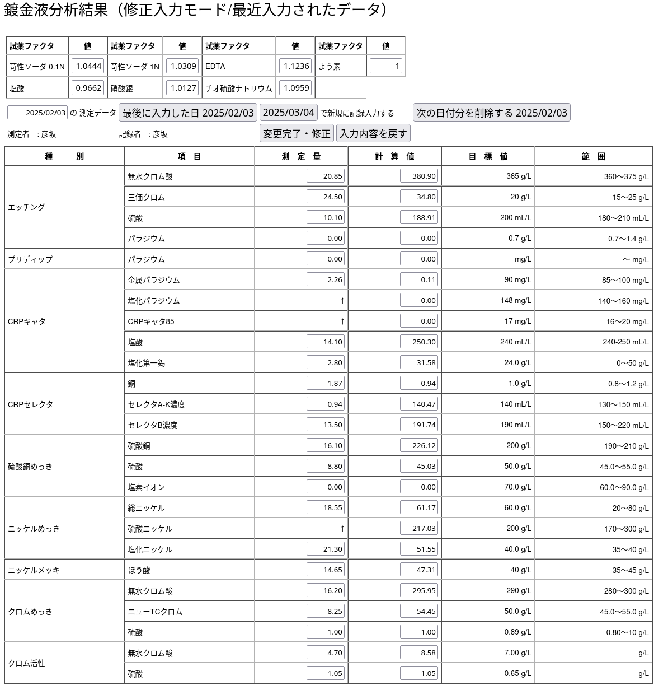

職務経歴書
本人情報
- 氏名： 彦坂 総太郎
- Name: Sotaro Hikosaka
- 居住地: 川崎市高津区（溝の口）
- 最終学歴: 東京都立小平高等学校
- 資格： 普通自動車免許(中型8t限定) ： 潜水士( 1993年取得 )
職務経歴
- 1991/4 武蔵電算(派遣)： 派遣先：マツダ株式会社東京本社飯田橋計算センター
- 1993/3 同・退社
- 1993/4 有限会社め組： 直接雇用：事務関連処理・受託業務・潜水士業務ほか
- 1996〜1999 檜伸図書株式会社/w-ing.or.jp のインフラ管理受託
- 2001/2 同・退社
- 2001/3〜現在 有限会社クルー：直接雇用：受託システム開発・監理・インフラ管理
技術スタック
特性・スキル
- 手当たりしだいに何でも読む。広く浅く。
初期の知見
- 汎用機オペレータを経験。
- 個人的には 8bit PC(MC6809) アセンブラでカンタンなものを書くことからスタート
- 1986年 OS/9(6809) に触れる機会を得る。
- 1990年 Linux1.0 をインストールし、UUCPを利用して勤務先とつなげる。
- SunOS4.x/HP-UX11 のある現場でのオペレーション業務従事。
主な業績
- ISP事業運営への参画
- 有限会社クルー創業時の参画
- 京浜島の鍍金工業団地でのLAN
- Access2000/取引先企業へのツール作成
- Linux普及初期における運用
- FreeBSDによる完全移行
- IPSec/VPN 相互運用
- qmailメールシステム運用
- postfixメールシステム運用
- DNS/djbdns
- DNS/powerdns
- 広告代理店のWebシステム管理
- 広告代理店・WebシステムバックエンドDB管理
現況
- Linux 現在は Ubuntu を日常業務で活用。
- デスクトップ環境としてGhostBSD(FreeBSD)、macBookAir(macOS)も日々活用。
- P2V: Windows95 で動くFAシステムに対するサポート。Windows10 PCの上のVirtualBoxで Windows95を稼働させ、ソフトウェア資産の減耗に対するケアを提供。
- Apple/macOS: iPhoneアプリ開発のため取得。iPhoneのMDM管理などに利用。
- FreeBSD/OS 管理全般 (インストールサーバ数 33台/ OSコンテナ含む160程度を管理）
- samba/openldap/radius/nagios/zabbix/postfix の 保守管理（ローカルなコードカスタマイズ含む）
- VPN/DNS の知識を活用した様々な提案と運用環境の実現・運用サポート
- WindowsPCの日常管理サポート・提携先ソフトウェア事業のサポート（DB運用など）
- TeamViewer/VNC/RDP を駆使してリモートでのエンドユーザサポート
サンプルなど
- nodejs/expressjs を使用した小規模システム開発

現在進めているもの
- 「負の遺産」清算と効率化
- 製造現場での問題可視化
- raspberry-pi の 活用
- OS管理の自動化 (特に FreeBSD / Ansible/railsの構成)
- LLM(llama.cpp/ollama の実用化に対する調査)
- Python/ES/tsx その他
就業条件
- 勤務形態: リモートをメイン： 出社・現地入構作業も可能
その他
- 地球環境に優しい移動手段の自転車利用シフト
- ロードバイク趣味: Strava